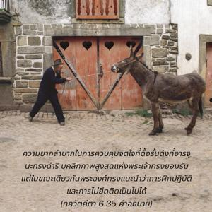

องค์ศฺรี กฺฤษฺณตรัสว่า โอ้ ยอดนักรบโอรสพระนาง กุนฺตี การดัดจิตใจที่ไม่สงบนิ่งเป็นสิ่งที่ยากมากโดยไม่ต้องสงสัย แต่เป็นไปได้ด้วยการฝึกปฏิบัติอย่างถูกต้องเหมาะสม และด้วยการไม่ยึดติด

ความยากลำบากในการควบคุมจิตใจที่ดื้อรั้นดังที่ อรฺชุน ทรงดำรินั้นบุคลิกภาพสูงสุดแห่งพระเจ้าทรงยอมรับ แต่ในขณะเดียวกันพระองค์ทรงแนะนำว่าการฝึกปฏิบัติและการไม่ยึดติดเป็นไปได้ การฝึกปฏิบัตินั้นคืออะไร ในยุคปัจจุบันไม่มีใครสามารถปฏิบัติตามกฎระเบียบอันเคร่งครัดในการที่จะให้ตนเองไปอยู่ยังสถานที่ศักดิ์สิทธิ์ และตั้งสมาธิจิตอยู่ที่องค์อภิวิญญาณ หักห้ามประสาทสัมผัสและจิตใจ ถือเพศพรหมจรรย์ หรืออยู่อย่างสันโดษได้ อย่างไรก็ดีด้วยการปฏิบัติกฺฤษฺณจิตสำนึกในเก้าวิธีแห่งการอุทิศตนเสียสละรับใช้องค์ภควานฺ วิธีแรกและสำคัญมากในการปฏิบัติอุทิศตนเสียสละคือ การสดับฟังเกี่ยวกับองค์กฺฤษฺณ ซึ่งเป็นวิถีทิพย์ที่ทรงพลังอำนาจมากในการขจัดข้อสงสัยทั้งหลายให้ออกไปจากจิตใจ ผู้ที่สดับฟังเกี่ยวกับองค์กฺฤษฺณได้มากเท่าไรก็จะมีความรู้แจ้ง และไม่ยึดติดกับทุกสิ่งทุกอย่างที่นำพาจิตใจให้ออกห่างจากองค์กฺฤษฺณได้มากเท่านั้น จากการไม่ยึดติดจิตใจอยู่กับกิจกรรมที่ไม่อุทิศตนเสียสละให้พระองค์เขาจะสามารถเรียนรู้ ไวราคฺย ได้อย่างง่ายดาย ไวราคฺย หมายถึงการไม่ยึดติดกับวัตถุและให้จิตใจปฏิบัติอยู่กับดวงวิญญาณ การไม่ยึดติดในวิถีทิพย์ของพวกไม่เชื่อในรูปลักษณ์ยากยิ่งกว่าการยึดมั่นจิตใจอยู่กับกิจกรรมขององค์กฺฤษฺณ เช่นนี้ปฏิบัติได้เพราะจากการสดับฟังเกี่ยวกับองค์กฺฤษฺณจะทำให้ยึดมั่นกับดวงวิญญาณสูงสุดโดยปริยาย การยึดมั่นเช่นนี้เรียกว่า ปเรศานุภว ความพึงพอใจทิพย์ คล้ายๆกับความรู้สึกพึงพอใจกับอาหารทุกคำที่คนกำลังหิวได้รับประทาน ขณะที่กำลังหิวเมื่อได้รับประทานมากเท่าไรก็จะรู้สึกพึงพอใจและมีพลังงานเพิ่มขึ้นมากเท่านั้น ในทำนองเดียวกันจากการปฏิบัติรับใช้ด้วยการอุทิศตนเสียสละเขามีความรู้สึกพึงพอใจทิพย์ในขณะที่จิตใจไม่ยึดติดกับจุดมุ่งหมายทางวัตถุ เหมือนกับการรักษาโรคด้วยวิธีที่ชำนาญและโภชนาการที่เหมาะสม ดังนั้นการสดับฟังกิจกรรมทิพย์ขององค์ศฺรี กฺฤษฺณจึงเป็นวิธีรักษาที่มีความชำนาญสำหรับจิตใจที่บ้าคลั่ง และการรับประทานภัตตาหารที่ถวายให้องค์กฺฤษฺณ คือโภชนาการที่เหมาะสมสำหรับคนไข้ที่กำลังมีความทุกข์ การรักษาเช่นนี้คือวิธีของกฺฤษฺณจิตสำนึก